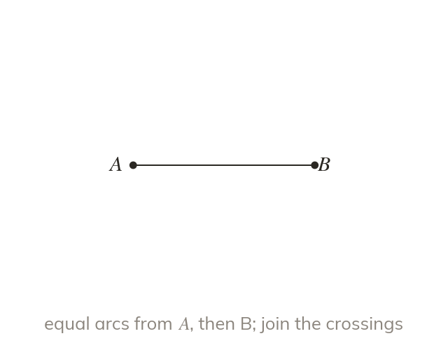
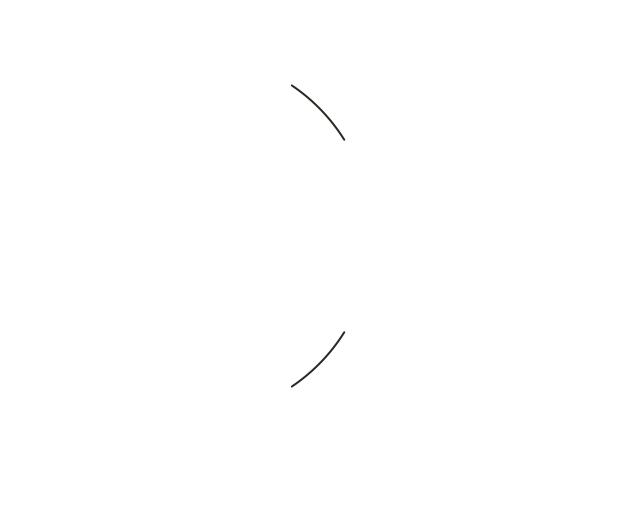
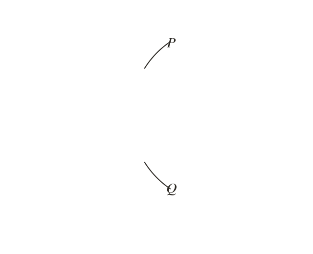
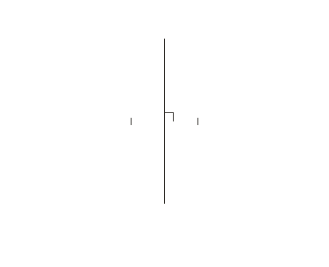

Equal arcs from both ends
Draw equal arcs from and from , wider than half of AB. Join the two crossings, P and Q. PQ cuts AB in half at right angles.
Arcs of one width, more than half of AB, are drawn from and then from , crossing at and . The line through and is the perpendicular bisector: it cuts AB in half at right angles. Less than half of AB, and the arcs from the two ends would never meet. Keep the same width for both ends. and are each as far from A as from .